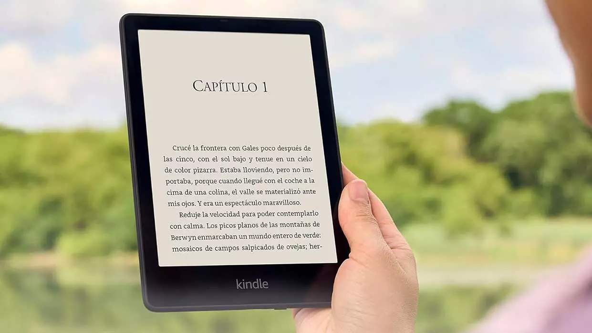

Tu mundo literario en un solo lugar.
Encuentra los mejores libros a los mejores precios. Lee, disfruta y aprende.
Comprar AhoraBienvenidos a un rincón donde la imaginación no tiene límites y la lectura es una aventura sin fin.
Encuentra tu próxima lectura favorita y déjate llevar por las maravillas de la literatura.
Temáticas destacadas

Ciencia Ficción y Fantasía
Romántica y Drama
Autoayuda
Literatura Contemporánea

¿Sabías que...?
La tecnología ha transformado radicalmente cómo accedemos a la lectura? Con la llegada de los libros electrónicos y las plataformas de lectura en línea, ahora es posible llevar una biblioteca completa en un dispositivo portátil. Además, las aplicaciones de lectura permiten ajustar el tamaño del texto, el brillo y el fondo para adaptarse a las preferencias individuales, lo que facilita la lectura en cualquier momento y lugar. La tecnología también ha dado lugar a audiolibros, permitiendo disfrutar de la literatura mientras realizas otras actividades, como conducir o hacer ejercicio. Así, la tecnología no solo ha hecho que los libros sean más accesibles, sino que también ha enriquecido la experiencia de lectura de nuevas maneras.